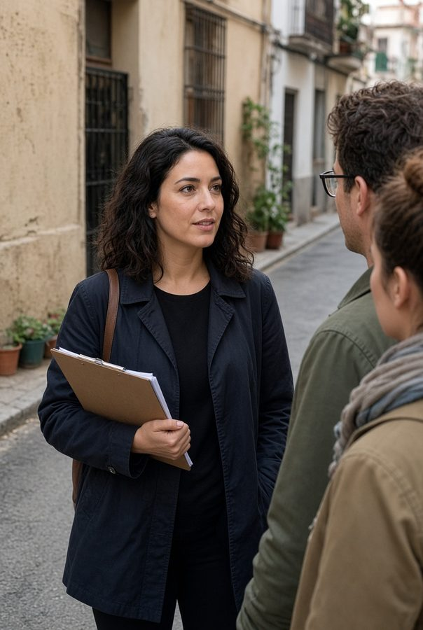

01 · Antes
Prevenir
Expediente que no vive en tu cabeza. Timing con margen de verdad. Briefing que el hotel y el conductor pueden ejecutar.

Hospitality and Group Events Coordination School
Si el martes sales con 40 personas, esto es para ti. Da igual que vengas de leisure, de un incentivo, de un congreso o de un crucero. Aquí se enseña el oficio de tierra: lo que no está en el máster y sí en el walkie.


Con claridad
Es
Una escuela pequeña. Ocho plazas. Casos reales. Checklists que te llevas. Andrea al frente, no un claustro anónimo.
No es
No hay ECTS. No hace falta venir de congresos. El aula está en Barcelona; el oficio, en toda España.
Método Tierra
Andrea lleva más de quince años coordinando grupos. El método sale de ahí: tres tiempos, el mismo expediente, cero heroísmo.
01 · Antes
Expediente que no vive en tu cabeza. Timing con margen de verdad. Briefing que el hotel y el conductor pueden ejecutar.
02 · Durante
Retraso, cierre, queja, proveedor que no llega. A quién llamas. Qué no dices al grupo. Plan B en diez minutos.
03 · Después
Handover a las 23:40. Debrief corto. Lo que se aprende se escribe, para que el siguiente grupo no pague el mismo error.

Quiénes somos
CEO de Por Aquí Conmigo. Más de 15 años en la calle y en la mesa: leisure, incentivo, reuniones, eventos, cruceros. Ha cerrado el día cuando el plan chocaba con el aeropuerto, el bus y el hotel.
La escuela nace de eso. No de un temario. De un método que ella usa el martes y te presta el lunes.
En la calle ya
Palma · leisure
«Llevaba el rooming en la cabeza y el hotel me pillaba siempre. Con el expediente de Andrea el check-in dura lo que tiene que durar. Mis grupos salen más tranquilos. Yo también.»
Madrid · incoming
«En mesa vivíamos del WhatsApp a las 6:10. Ahora el briefing lo entiende el conductor. El equipo de campo dejó de llamarme para preguntar lo que ya estaba escrito.»
Sevilla · incentivo
«Se retrasó el vuelo y se caía la cena. Antes improvisaba. Con la cadena de mando supe a quién llamar y qué no decir al grupo. Salvamos la noche sin que ellos lo notaran.»
Para ti
Acompañas
Tour leader, on-site, hospitality desk. El grupo te mira a ti cuando el plan se tuerce.
Preparas
El mismo expediente, visto desde la mesa. Para que el campo no improvise.
El grupo
Vacacional, incentivo, congreso, evento, crucero, deporte.
Una semana con nosotras
Leer el expediente. Marcar agujeros.
Timing real. Reloj en mano.
Hospitalidad y queja.
Simulacro. Vuelo tarde.
Handover y debrief.
Quiénes somos
CEO de Por Aquí Conmigo. Más de 15 años coordinando y moviendo grupos. La escuela tiene una cara. La suya.
Andrea no monta una escuela porque “el sector necesita formación”. La monta porque ha visto demasiados grupos salvados a pulso, y demasiadas coordinadoras buenas quemándose por no tener método.
Ha trabajado el leisure y el incentivo, la llegada de un congreso y el desembarco de un crucero. Sabe lo que pesa un expediente mal hecho y lo que ahorra uno bueno.
«No te pido que seas más simpática. Te pido que el martes no dependas de la memoria.»
Método Tierra
No es un framework de consultora. Es lo que Andrea hace con cada grupo, pasado a aula: prevenir, resolver, cerrar. Siempre por escrito. Siempre con cadena de mando.
Antes
Expediente, timing, checklist, briefing. Si no está escrito, no existe.
Durante
El día feo se entrena. No se espera a que te pille.
Después
Handover y debrief. El saber no se queda en una persona.
Lo que cuentan quienes ya lo usan
Laura V. · guía · Palma
«Mis grupos salen más tranquilos. Yo también.»
Leisure. El hotel dejó de sorprenderla el día que el rooming dejó su cabeza y pasó al expediente.
Marta R. · ops · Madrid
«El campo dejó de preguntarme lo que ya estaba escrito.»
Incoming. El briefing al conductor cortó el WhatsApp de madrugada.
Noelia S. · coordinadora · Sevilla
«Salvamos la noche sin que el grupo lo notara.»
Incentivo. Vuelo tarde, cena en riesgo, cadena de mando en marcha.
Oficio
No hace falta venir de MICE. Hace falta haber estado al frente de un grupo, o querer estarlo sin improvisar.
Antes de que salga
En la calle
Pieza de aula
Anonimizado. Distinto tipo de grupo cada edición.

El detalle se cuenta en clase, con Andrea.
Programa
El simulacro usa expedientes de varios tipos de grupo, no solo de congreso. El detalle se cuenta con nosotras.
Una semana tipo
Expediente.
Timing.
Hospitalidad.
Simulacro.
Handover.
Presencial
Ahí hay volumen y calle para entrenar. El contenido vale si trabajas en Madrid, Valencia, Sevilla, Málaga, Canarias, Baleares o el norte.
Si no puedes desplazarte: híbrido. El módulo de calle, en una edición en Barcelona o en tu ciudad si hay grupo.

Quién imparte
La ciudad del aula no es la credencial. El método sí.
Reservar plazaEdición
Cohorte cero. Precio de fundadores te lo dice ella. Cuéntanos ciudad y qué grupos mueves.